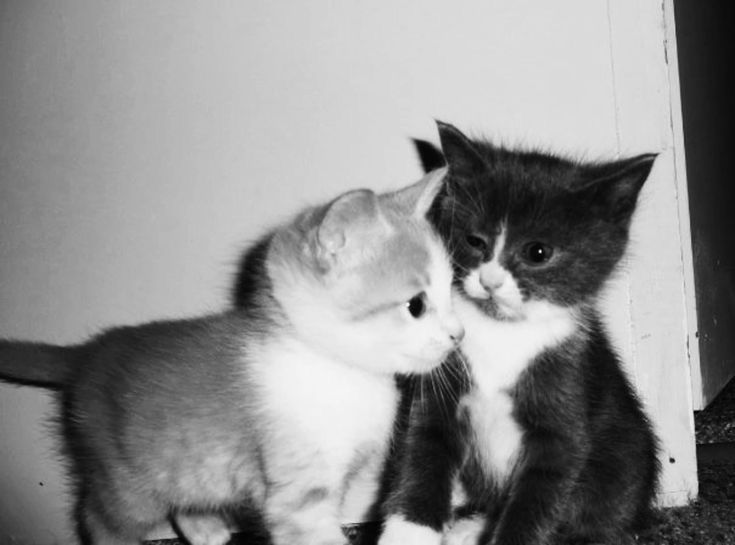

Sayang, if you read this. I’d say biggest apology to you, aku bener bener minta maaf karna melakukan kesalahan yang fatal ini tanpa mikirin perasaan kamu ☹️☹️☹️
Aku tau kamu pasti bosen baca kata maaf maaf maaf terus dari aku, but the point is i truly apologize for anything i did dan aku menyesal. Aku yang seharusnya protect kamu harder tapi malah kayak gini, aku minta maaf sayang..
Please give me a chance to proof that i’m not like what you think, i have love you so fucking much and it’s true. I fall for you, my mind my heart my soul is full of you.
Maaf kalo dari kemarin aku rese rewel padahal kamu lagi gamau aku ganggu, aku takut kamu ninggalin aku. Meskipun aku tau ini akibat dari ulah aku sendiri, but i’m still afraid.
Sayang, aku ga cinta siapapun lagi selain kamu. Aku ga menyangkal kalo tindakan aku salah terlepas ini masuk cheat or nah. Please forgive me ☹️☹️☹️
Aku tau kamu udah extra sabar banget ngadepin aku dari yang aku nyebelin, rese, termasuk ini. Aku lebih suka dimarahin dibandingkan didiemin kayak gini.. sayangku, aku minta maaf

I truly love you.
Do you still love me?